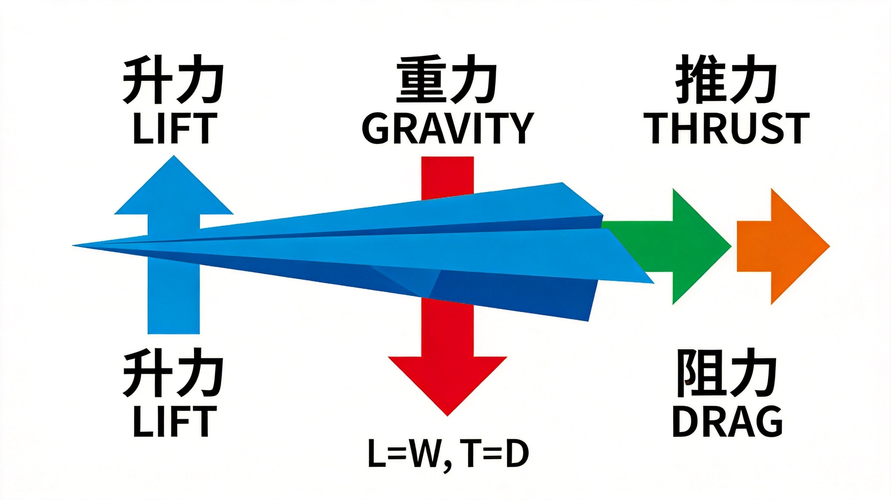
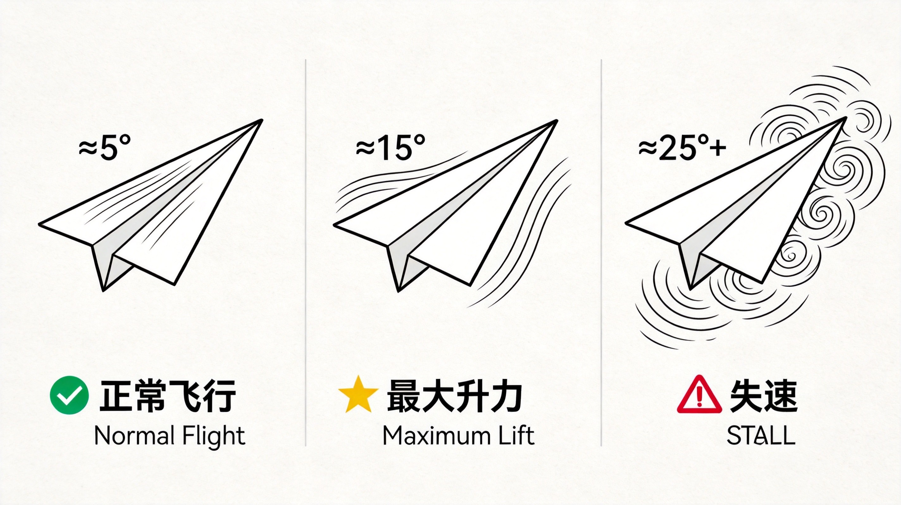
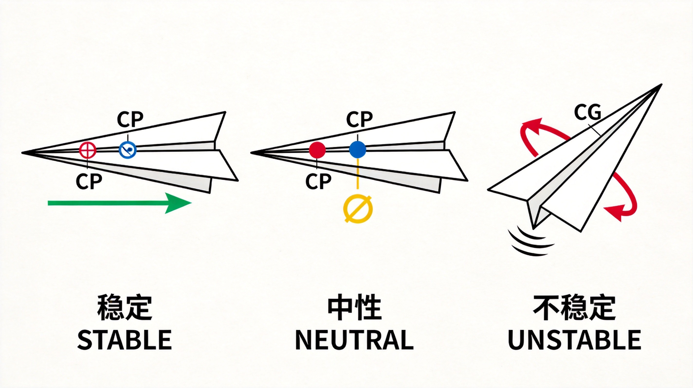
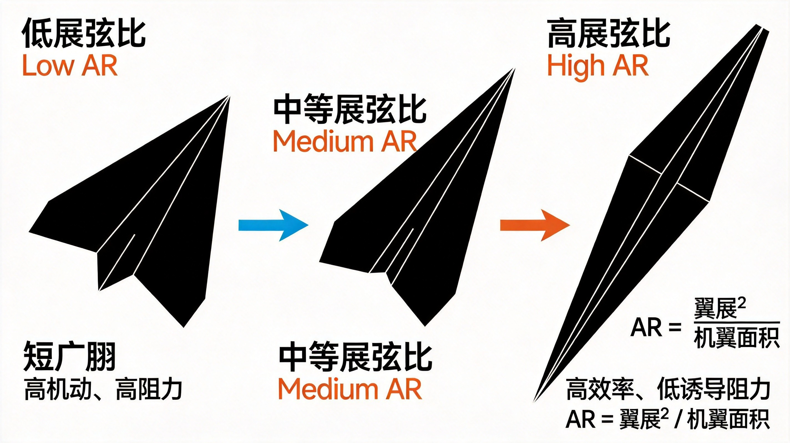
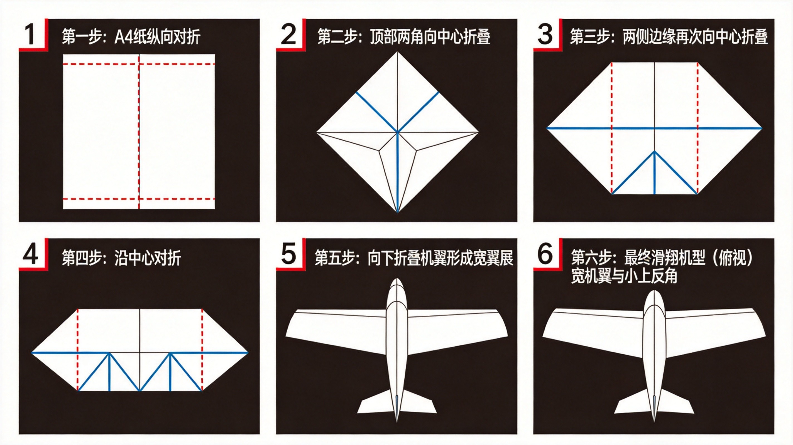
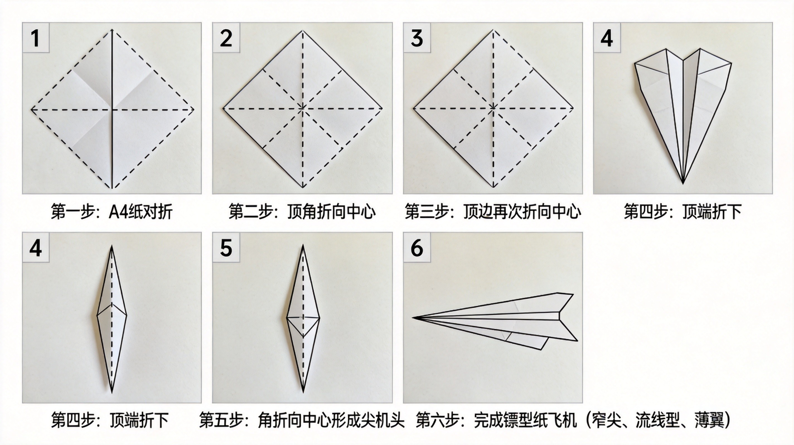
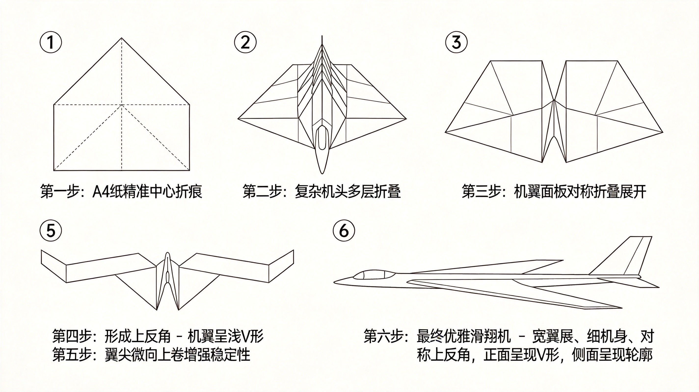
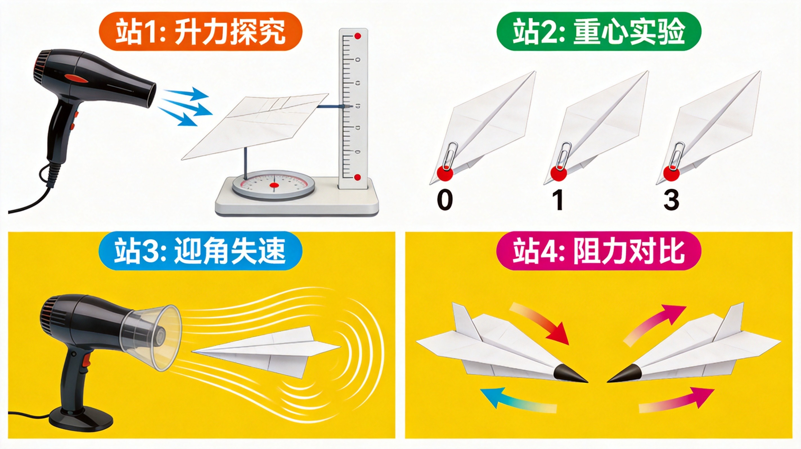
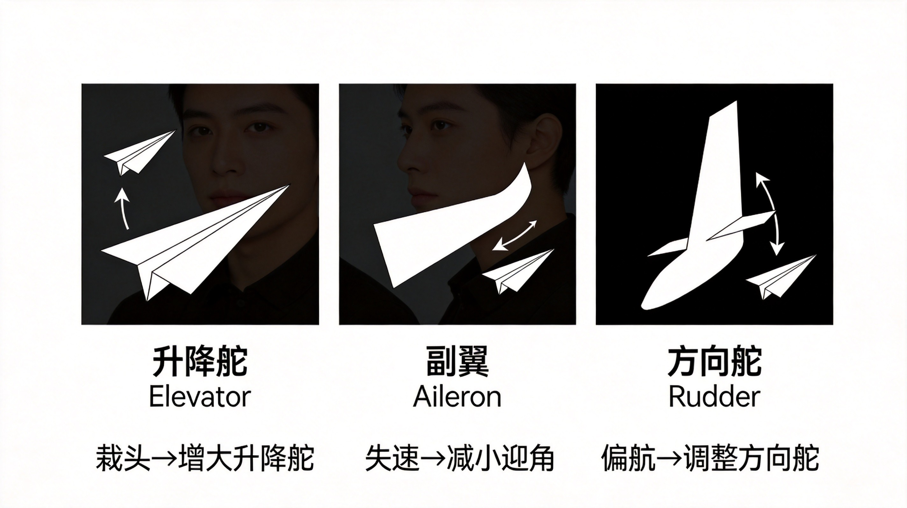
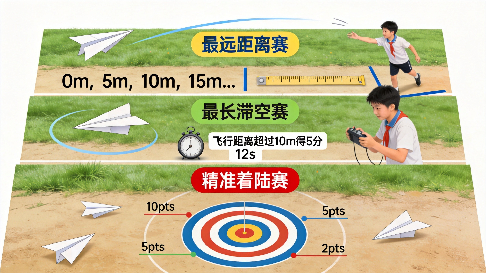

教学资源包 — 图解 · 视频 · 活动设计，一站式教学支持
以下示意图可直接用于课件或课堂投屏，帮助学生直观理解纸飞机飞行背后的物理原理。

升力重力推力阻力
展示纸飞机飞行中受到的四大作用力：升力（机翼上下压差产生）、重力（地球引力）、推力（投掷初始动能）、阻力（空气摩擦与形状阻力）。平衡时 L=W、T=D。

正常飞行最大升力失速
三面板对比：小迎角（~5°）气流平滑、中等迎角（~15°）升力最大、大迎角（>20°）气流分离导致失速。帮助学生理解"抬头不等于飞得高"。

稳定中性不稳定
三架飞机对比：重心（⊕）在压力中心（⊗）前方 → 稳定；重合 → 中性；后方 → 翻转失控。经验法则：重心在机翼前缘往后约 1/3 弦长处最稳定。

低AR中AR高AR
三种翼型俯视对比：低展弦比（短宽翼，适合距离赛）、中展弦比（均衡）、高展弦比（细长翼，诱导阻力小，适合滞空赛）。公式：AR = 翼展² / 机翼面积。
三种经典折法，由易到难。建议打印后分发给学生，或投屏逐步演示。

难度 ★★适合滞空赛
机翼宽大、展弦比适中，提供较大升力。适合追求滞空时间。关键要点：上反角（V形展开）提供横向稳定性。
适用赛道：最长滞空赛、基础练习

难度 ★适合距离赛
机头尖锐、机身窄长、阻力最小。多次折叠机头集中配重，投掷速度快。适合追求飞行距离。
适用赛道：最远距离赛、快速入门

难度 ★★★★学有余力挑战
日本户田拓夫（Takuo Toda）经典设计，曾以 29.2 秒保持世界滞空纪录 15 年。极宽机翼 + 大展弦比 + 明显上反角。需要高天花板室内场地。
适用赛道：滞空挑战、进阶探索
四个探究站分组轮转，每站约 6 分钟。全班分 4 大组，轮流到各站动手实验。

| 探究站 | 核心变量 | 实验器材 | 关键发现 |
|---|---|---|---|
| 站 1 · 升力探究 | 机翼面积 | 吹风机、不同大小纸翼、电子秤 | 升力 ∝ 面积，但面积大阻力也大 |
| 站 2 · 重心实验 | 重心位置（CG） | 回形针 0/1/3 个、纸飞机 | 重心前 1/3 弦长最稳定 |
| 站 3 · 迎角失速 | 迎角（AoA） | 吹风机风洞、量角器、手机慢动作 | 超过临界迎角 → 失速坠落 |
| 站 4 · 阻力对比 | 外形 & 表面粗糙度 | 尖头 / 钝头飞机、揉皱纸飞机 | 尖头低阻力，光滑优于褶皱 |

就像真飞机有飞行控制面，纸飞机也有"三大舵"：
| 调校手段 | 对应真飞机 | 效果 | 操作方法 |
|---|---|---|---|
| 升降舵 Elevator | 水平尾翼后缘 | 控制俯仰（抬头/低头） | 机翼后缘向上折 → 抬头；向下折 → 低头 |
| 副翼 Aileron | 机翼后缘两侧 | 控制滚转（左倾/右倾） | 一侧后缘微折 → 向该侧转弯 |
| 方向舵 Rudder | 垂直尾翼后缘 | 控制偏航（左转/右转） | 机身尾部向一侧弯折 → 机头转向该侧 |

| 赛道 | 规则 | 评分 |
|---|---|---|
| 🚀 最远距离赛 | 每人 3 次机会，取最远距离；双脚不得越线 | 距离（米）排名 |
| ⏱️ 最长滞空赛 | 每人 3 次机会，2 名计时员独立计时取平均 | 时间（秒）排名 |
| 🎯 精准着陆赛 | 10 米外靶心，3 次取最佳 | 靶心 10 分 / 中环 5 分 / 外环 2 分 |
🏆 综合冠军 = 距离 40% + 滞空 35% + 精准 25%
以下视频资源经筛选整理，适合课堂播放或学生课后自主学习。分为"科学原理"、"折法教学"、"世界纪录"三类。